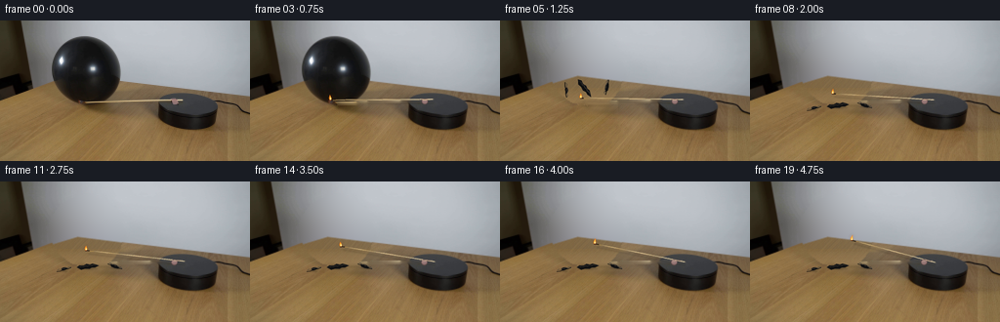
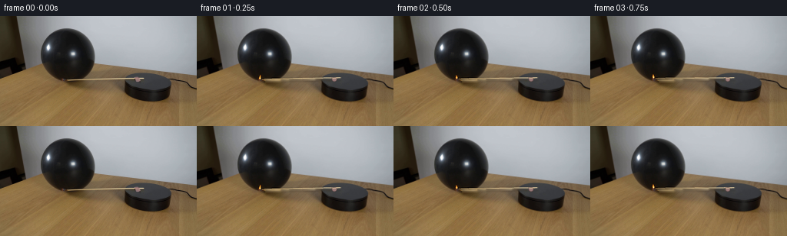
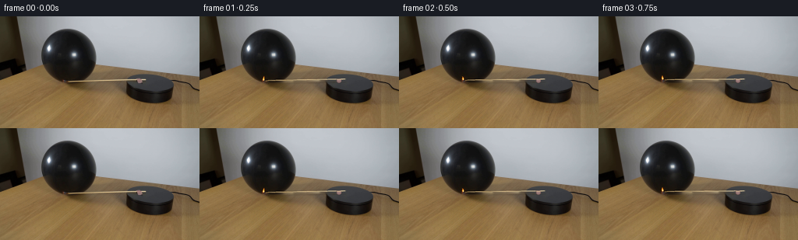
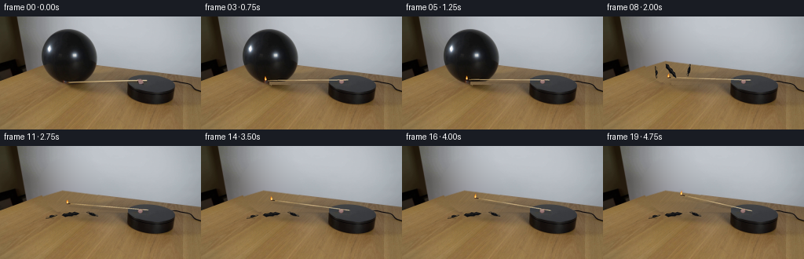
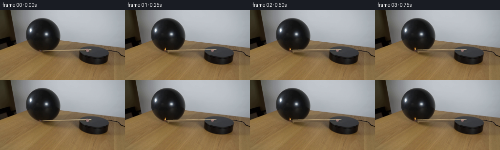

CODING AGENTS AS PIXEL WORLD MODELS
traex/GPT-6.1-Sol · 0114
点击播放 · 原生 RGB 像素
逐轮保存的候选
回放视频、检查图与代码变化。
每份候选均可单独播放。实际图片检查记录在下方工具轨迹中。
候选 01播放与检查图
点击播放 · 原生 RGB 像素


展开代码变化
--- 上一保存版本
+++ 本次保存版本
@@ -0,0 +1,240 @@
+from pathlib import Path
+import math
+import numpy as np
+from PIL import Image, ImageDraw, ImageFilter
+from scipy.ndimage import gaussian_filter, binary_dilation, distance_transform_edt
+import cv2
+import artifact_io
+
+ROOT = Path(__file__).resolve().parent
+W,H=256,144
+S=4
+Y,X=np.mgrid[:H,:W]
+original=np.array(Image.open(ROOT/'first_frame.png').convert('RGB'))
+rng=np.random.default_rng(114)
+
+# The silhouette is estimated from the dark object itself. The last few
+# scan lines are bounded explicitly to exclude the brown tabletop.
+anchors=np.array([[15,81,93],[16,78,96],[18,72,101],[20,68,105],[24,62,112],
+ [30,57,117],[36,53,121],[42,51,124],[50,51,125],[56,52,125],
+ [60,53,124],[64,55,123],[68,57,122],[72,60,120],[76,64,117],
+ [80,69,113],[82,72,110],[83,74,108],[84,79,89],[85,80,88]])
+left=np.interp(np.arange(H),anchors[:,0],anchors[:,1])
+right=np.interp(np.arange(H),anchors[:,0],anchors[:,2])
+ball_area=(X>=left[:,None])&(X<=right[:,None])&(Y>=15)&(Y<=85)
+
+# A smooth photometric model of the unobstructed wall, fit only to the
+# visible pixels on either side of the balloon.
+xn=(X-90)/65.; yn=(Y-35)/35.
+terms=[xn**a*yn**b for a in range(6) for b in range(4) if a+b<=6]
+A=np.stack(terms,-1)
+edge=56+np.where(X<79,(79-X)*.30,(X-79)*.126)
+wall_valid=(X>=34)&(X<=165)&(Y<edge-3)&(Y<65)&~binary_dilation(ball_area,iterations=3)
+co=np.linalg.lstsq(A[wall_valid],original[wall_valid].astype(float),rcond=None)[0]
+wall=np.clip(A@co,0,255)
+
+# Re-use the actual wood grain from the same table; fit its local colour
+# and illumination with samples outside the balloon's cast shadow.
+wood=np.zeros((H,W,3),float)
+for y in range(H):
+ lo=max(68,min(y,143))
+ cols=original[lo,36:54].astype(float)
+ mean=cols.mean(0)
+ for x in range(W):
+ frac=np.clip((x-45)/100,0,1)
+ # The right-hand side of the board has a slightly cooler finish.
+ colour=mean+frac*np.array([3.,7.,13.])
+ yy=100+(y%36)
+ sample=original[yy, (x+17)%150].astype(float)
+ sample_smooth=gaussian_filter(original.astype(float),(.0,2.5,0))[yy,(x+17)%150]
+ wood[y,x]=colour+0.65*(sample-sample_smooth)
+# Table/wall junction is soft at this resolution, just as in the plate.
+a=np.clip((Y-edge+0.55)/1.7,0,1)[...,None]
+revealed=wall*(1-a)+wood*a
+
+# Remove the old match (and its narrow shadow) numerically. No camera or
+# platform pixels outside this tiny region are changed.
+remove=np.zeros((H,W),np.uint8)
+d=ImageDraw.Draw(imask:=Image.new('L',(W,H)))
+d.line([(87,84),(187,81)],fill=255,width=4)
+d.line([(89,86),(162,83)],fill=255,width=3)
+d.ellipse((174,78,186,89),fill=255)
+d.ellipse((79,80,87,86),fill=255)
+remove=np.array(imask)
+# Keep all of the inflated balloon while making the plate without a match.
+remove_pre=remove.copy();remove_pre[ball_area]=0
+base_pre=cv2.inpaint(original,remove_pre,3,cv2.INPAINT_TELEA)
+
+# Erase the balloon and its contact shadow with a feathered local matte.
+matte=gaussian_filter(binary_dilation(ball_area,iterations=1).astype(float),.50)
+matte=np.maximum(matte,ball_area.astype(float))
+# The opaque silhouette has a subpixel blurred rim.
+base_post=base_pre.astype(float)*(1-matte[...,None])+revealed*matte[...,None]
+# Shadow left beneath the bottom of the balloon disappears with it.
+shadow_clean=np.exp(-(((X-98)/17.)**2+((Y-89)/6.5)**2))*0.88
+shadow_clean*=((Y>84)&(X>75)&(X<121))
+base_post=base_post*(1-shadow_clean[...,None])+wood*shadow_clean[...,None]
+# Remove anything left of the match in the reconstructed section.
+base_post=cv2.inpaint(np.uint8(np.clip(base_post,0,255)),remove,3,cv2.INPAINT_TELEA).astype(float)
+
+# Longitudinal texture measured on the lit wooden match in the initial frame.
+rodtex=[]
+for x in range(88,188):
+ yc=83.-(x-88)*.025
+ # Strongest warm pixel in the local two-row cross section.
+ ys=[max(0,int(math.floor(yc))),min(H-1,int(math.ceil(yc)))]
+ vals=original[ys,x].astype(float)
+ rodtex.append(vals[np.argmax(vals[:,0]+vals[:,1]-vals[:,2])])
+rodtex=np.array(rodtex)
+
+pivot=np.array([179.7,83.0]); sy=.37
+
+def rotate(p,theta):
+ p=np.array(p,float)-pivot
+ c,s=math.cos(theta),math.sin(theta)
+ return pivot+np.array([c*p[0]-s*p[1]/sy, sy*s*p[0]+c*p[1]])
+
+def line(draw,a,b,fill,width):
+ draw.line([tuple(np.array(a)*S),tuple(np.array(b)*S)],fill=fill,width=max(1,round(width*S)))
+
+def ellipse(draw,box,fill):
+ draw.ellipse(tuple(v*S for v in box),fill=fill)
+
+def flame_layer(head,frame):
+ layer=Image.new('RGBA',(W*S,H*S));d=ImageDraw.Draw(layer)
+ x,y=head
+ flick=math.sin(frame*2.41)*.55+math.sin(frame*4.7)*.25
+ height=5.4+.6*math.sin(frame*2.14)
+ lean=-.5+.75*math.sin(frame*1.7)
+ # Soft small halo, not a luminous explosion.
+ halo=Image.new('RGBA',layer.size);hd=ImageDraw.Draw(halo)
+ ellipse(hd,(x-2.2,y-height*.7-2.2,x+2.2,y-height*.7+2.2),(255,114,15,23))
+ halo=halo.filter(ImageFilter.GaussianBlur(1.15*S));layer.alpha_composite(halo)
+ points=[(x-1.15,y-.2),(x-1.3+lean*.2,y-2.2),(x-.5+lean*.4,y-3.7),
+ (x+lean+flick,y-height),(x+.55+lean*.4,y-3.7),(x+1.05,y-1.7),(x+.75,y-.15)]
+ d=ImageDraw.Draw(layer)
+ d.polygon([(p[0]*S,p[1]*S) for p in points],fill=(255,131,23,230))
+ inn=[(x-.57,y-.2),(x-.66,y-1.5),(x+lean*.3,y-height*.71),(x+.55,y-1.8),(x+.52,y-.2)]
+ d.polygon([(p[0]*S,p[1]*S) for p in inn],fill=(255,226,99,249))
+ ellipse(d,(x-.33,y-1.7,x+.4,y-.4),(255,250,191,255))
+ ellipse(d,(x-.55,y-.25,x+.55,y+.45),(154,67,32,230))
+ return layer
+
+def draw_match(frame,angle,bg):
+ hi=Image.fromarray(np.uint8(np.clip(bg,0,255))).convert('RGBA').resize((W*S,H*S),Image.Resampling.BICUBIC)
+ over=Image.new('RGBA',hi.size);d=ImageDraw.Draw(over)
+ tip=rotate((82.4,83.4),angle)
+ end=rotate((186.,80.95),angle)
+ # The shaft is above the table. Its narrow soft cast shadow follows it.
+ sh=Image.new('RGBA',hi.size);sd=ImageDraw.Draw(sh)
+ shadow_offset=np.array([1.9,3.4])
+ line(sd,tip+shadow_offset,end+shadow_offset,(18,14,8,49),1.3)
+ sh=sh.filter(ImageFilter.GaussianBlur(.8*S))
+ hi.alpha_composite(sh)
+ # Subpixel edges and real longitudinal colour variations.
+ for j in range(100):
+ p0=rotate((88+j,83.-j*.025),angle)
+ p1=rotate((89+j,83.-(j+1)*.025),angle)
+ col=np.clip(rodtex[j],0,255).astype(int)
+ line(d,p0,p1,tuple(col)+(255,),1.08)
+ shaft_start=rotate((85.0,83.65),angle)
+ shaft_mid=rotate((90.,82.95),angle)
+ line(d,shaft_start,shaft_mid,(164,131,77,255),1.12)
+ # The portion next to the flame becomes charred.
+ burned=2.1+.12*frame
+ u=(end-tip)/np.linalg.norm(end-tip)
+ line(d,tip,tip+u*burned,(48,36,24,255),1.3)
+ ellipse(d,(tip[0]-1.1,tip[1]-.8,tip[0]+1.05,tip[1]+.7),(43,33,27,255))
+ # Original small red-brown attachment on the platform.
+ mount=rotate((179,83.6),angle)
+ mx,my=mount
+ ellipse(d,(mx-3,my-3.3,mx+3.2,my+2.4),(102,79,77,255))
+ ellipse(d,(mx-2.5,my-3,mx+2.8,my+1.5),(149,118,117,255))
+ ellipse(d,(mx-2.1,my-2.7,mx+1.8,my-.8),(167,136,129,255))
+ line(d,(mx-.7,my-2.1),(mx+1.7,my-1.6),(179,147,133,220),.5)
+ # Part of the shaft still shows through the top of the attachment.
+ line(d,rotate((176,81.1),angle),rotate((184,81),angle),(209,184,141,255),.82)
+ hi.alpha_composite(over)
+ hi.alpha_composite(flame_layer(tip,frame))
+ return hi, tip
+
+# Small sheets of recoiling latex, then gravity and a short damped settling
+# phase. One large folded remnant and two little torn pieces remain.
+def latex_piece(layer,center,scale,rot,variant,alpha=255):
+ d=ImageDraw.Draw(layer)
+ pts=np.array([[-11,-.6],[-8,-2.6],[-4,-1.8],[-1,-3.1],[2,-2.1],[5,-2.8],
+ [9,-1.1],[11,.1],[7,1.5],[4,1],[1,2.3],[-3,1.5],[-7,2.1],[-9,.5]],float)
+ if variant==1:pts=pts[::2]*[.53,.9]
+ if variant==2:pts=pts[1::2]*[.35,.72]
+ c,s=math.cos(rot),math.sin(rot)
+ R=np.array([[c,-s],[s,c]])
+ transformed=(pts*scale)@R.T+center
+ d.polygon([tuple(p*S) for p in transformed],fill=(20,20,21,alpha))
+ for k in range(4):
+ pp=np.array([[-8+k*4,-.9],[ -6+k*4,-1.6],[-4+k*4,-.5]])*scale
+ pp=pp@R.T+center
+ d.line([tuple(p*S) for p in pp],fill=(46+k*2,46+k*2,47+k*2,round(alpha*.80)),width=max(1,round(.43*S*scale)))
+ pp=np.array([[-9,.4],[-5,.8],[0,.1],[4,.5],[8,-.1]])*scale
+ pp=pp@R.T+center
+ d.line([tuple(p*S) for p in pp],fill=(9,10,11,alpha),width=max(1,round(.7*S*scale)))
+
+frames=[original.copy()]
+POP=4
+for frame in range(1,20):
+ # Clockwise in the camera projection; a slow initial approach, then
+ # unimpeded motion once the rubber membrane has ruptured.
+ deg=frame*.95 if frame<POP else 3.8+(frame-POP)*2.4
+ angle=math.radians(deg)
+ bg=base_pre.astype(float).copy() if frame<POP else base_post.copy()
+ if frame<POP:
+ contact=rotate((82.4,83.4),angle)
+ # Slight local warming of the glossy latex, without changing exposure.
+ heat=np.exp(-(((X-contact[0])/4.0)**2+((Y-(contact[1]-2))/4.)**2))
+ heat*=ball_area
+ bg+=heat[...,None]*np.array([7.,2.,-.4])
+ hi,head=draw_match(frame,angle,bg)
+ if frame>=POP:
+ dt=(frame-POP)*.25
+ layer=Image.new('RGBA',hi.size)
+ # Initial ballistic positions converge to fixed resting positions.
+ positions=[]
+ for k,(start,finish,vx,vy) in enumerate([
+ ((84.,75.),(90.,87.5),9.,-7.),
+ ((105.,73.),(118.,87.),17.,-6.),
+ ((69.,76.),(66.,90.),-11.,-2.)]):
+ flight=[.65,.72,.55][k]
+ if dt<flight:
+ u=dt/flight
+ x=start[0]+(finish[0]-start[0])*u
+ y=start[1]+(finish[1]-start[1])*u-11*np.sin(np.pi*u)
+ rot=[-.35,.4,-.5][k]+dt*[5.,-7.,8.][k]
+ sc=[1.02,.91,.90][k]
+ else:
+ settle=dt-flight
+ x=finish[0]+.7*math.sin(settle*19)*math.exp(-settle*8)
+ y=finish[1]-.5*abs(math.sin(settle*17))*math.exp(-settle*8)
+ rot=[-.12,.38,-.25][k]+.05*math.sin(settle*14)*math.exp(-settle*8)
+ sc=[1.03,.91,.90][k]
+ positions.append((x,y,rot,sc))
+ # Contact shadows only for pieces close to the wooden surface.
+ shadow=Image.new('RGBA',hi.size);sd=ImageDraw.Draw(shadow)
+ for k,(x,y,rot,sc) in enumerate(positions):
+ if dt>.45:
+ rx=[10,5,3][k]
+ ellipse(sd,(x-rx,y+1,x+rx,y+2.6),(17,14,10,56))
+ shadow=shadow.filter(ImageFilter.GaussianBlur(.65*S));hi.alpha_composite(shadow)
+ for k,(x,y,rot,sc) in enumerate(positions):latex_piece(layer,np.array([x,y]),sc,rot,k)
+ # At 4fps the snap occurs between adjacent samples, not in slow motion.
+ hi.alpha_composite(layer)
+ out=np.array(hi.convert('RGB').resize((W,H),Image.Resampling.LANCZOS))
+ # All unchanged pixels are copied from the source to avoid resampling the
+ # locked-off photographic background.
+ pre=base_pre if frame<POP else np.uint8(np.clip(base_post,0,255))
+ changed=np.max(np.abs(out.astype(int)-pre.astype(int)),axis=2)>2
+ changed=binary_dilation(changed,iterations=1)
+ out[~changed]=pre[~changed]
+ frames.append(out)
+frames=np.stack(frames).astype(np.uint8)
+assert np.array_equal(frames[0],original)
+artifact_io.save(frames,ROOT)
+Image.fromarray(np.uint8(np.clip(base_post,0,255))).save(ROOT/'.tmp/reconstructed.png')
候选 02播放与检查图
点击播放 · 原生 RGB 像素

展开代码变化
--- 上一保存版本
+++ 本次保存版本
@@ -18,7 +18,7 @@
anchors=np.array([[15,81,93],[16,78,96],[18,72,101],[20,68,105],[24,62,112],
[30,57,117],[36,53,121],[42,51,124],[50,51,125],[56,52,125],
[60,53,124],[64,55,123],[68,57,122],[72,60,120],[76,64,117],
- [80,69,113],[82,72,110],[83,74,108],[84,79,89],[85,80,88]])
+ [80,69,113],[82,72,107],[83,77,85],[84,79,85],[85,80,84]])
left=np.interp(np.arange(H),anchors[:,0],anchors[:,1])
right=np.interp(np.arange(H),anchors[:,0],anchors[:,2])
ball_area=(X>=left[:,None])&(X<=right[:,None])&(Y>=15)&(Y<=85)
@@ -36,17 +36,21 @@
# Re-use the actual wood grain from the same table; fit its local colour
# and illumination with samples outside the balloon's cast shadow.
wood=np.zeros((H,W,3),float)
+wood_smooth=gaussian_filter(original.astype(float),(0,2.5,0))
for y in range(H):
lo=max(68,min(y,143))
cols=original[lo,36:54].astype(float)
mean=cols.mean(0)
+ ry=lo
+ if 80<=lo<=83: ry=79
+ rightmean=original[ry,126:146].astype(float).mean(0)
for x in range(W):
- frac=np.clip((x-45)/100,0,1)
+ frac=np.clip((x-45)/91,0,1)
# The right-hand side of the board has a slightly cooler finish.
- colour=mean+frac*np.array([3.,7.,13.])
+ colour=mean*(1-frac)+rightmean*frac
yy=100+(y%36)
sample=original[yy, (x+17)%150].astype(float)
- sample_smooth=gaussian_filter(original.astype(float),(.0,2.5,0))[yy,(x+17)%150]
+ sample_smooth=wood_smooth[yy,(x+17)%150]
wood[y,x]=colour+0.65*(sample-sample_smooth)
# Table/wall junction is soft at this resolution, just as in the plate.
a=np.clip((Y-edge+0.55)/1.7,0,1)[...,None]
@@ -71,7 +75,7 @@
# The opaque silhouette has a subpixel blurred rim.
base_post=base_pre.astype(float)*(1-matte[...,None])+revealed*matte[...,None]
# Shadow left beneath the bottom of the balloon disappears with it.
-shadow_clean=np.exp(-(((X-98)/17.)**2+((Y-89)/6.5)**2))*0.88
+shadow_clean=np.exp(-(((X-98)/21.)**2+((Y-88)/7.)**2))*0.92
shadow_clean*=((Y>84)&(X>75)&(X<121))
base_post=base_post*(1-shadow_clean[...,None])+wood*shadow_clean[...,None]
# Remove anything left of the match in the reconstructed section.
@@ -130,6 +134,7 @@
shadow_offset=np.array([1.9,3.4])
line(sd,tip+shadow_offset,end+shadow_offset,(18,14,8,49),1.3)
sh=sh.filter(ImageFilter.GaussianBlur(.8*S))
+ coverage=np.array(sh.getchannel('A'))>0
hi.alpha_composite(sh)
# Subpixel edges and real longitudinal colour variations.
for j in range(100):
@@ -155,8 +160,11 @@
# Part of the shaft still shows through the top of the attachment.
line(d,rotate((176,81.1),angle),rotate((184,81),angle),(209,184,141,255),.82)
hi.alpha_composite(over)
- hi.alpha_composite(flame_layer(tip,frame))
- return hi, tip
+ fl=flame_layer(tip,frame)
+ hi.alpha_composite(fl)
+ coverage|=np.array(over.getchannel('A'))>0
+ coverage|=np.array(fl.getchannel('A'))>0
+ return hi, tip, coverage
# Small sheets of recoiling latex, then gravity and a short damped settling
# phase. One large folded remnant and two little torn pieces remain.
@@ -179,11 +187,11 @@
d.line([tuple(p*S) for p in pp],fill=(9,10,11,alpha),width=max(1,round(.7*S*scale)))
frames=[original.copy()]
-POP=4
+POP=7
for frame in range(1,20):
# Clockwise in the camera projection; a slow initial approach, then
# unimpeded motion once the rubber membrane has ruptured.
- deg=frame*.95 if frame<POP else 3.8+(frame-POP)*2.4
+ deg=frame*.95 if frame<POP else POP*.95+(frame-POP)*2.4
angle=math.radians(deg)
bg=base_pre.astype(float).copy() if frame<POP else base_post.copy()
if frame<POP:
@@ -192,7 +200,7 @@
heat=np.exp(-(((X-contact[0])/4.0)**2+((Y-(contact[1]-2))/4.)**2))
heat*=ball_area
bg+=heat[...,None]*np.array([7.,2.,-.4])
- hi,head=draw_match(frame,angle,bg)
+ hi,head,coverage=draw_match(frame,angle,bg)
if frame>=POP:
dt=(frame-POP)*.25
layer=Image.new('RGBA',hi.size)
@@ -223,15 +231,18 @@
rx=[10,5,3][k]
ellipse(sd,(x-rx,y+1,x+rx,y+2.6),(17,14,10,56))
shadow=shadow.filter(ImageFilter.GaussianBlur(.65*S));hi.alpha_composite(shadow)
+ coverage|=np.array(shadow.getchannel('A'))>0
for k,(x,y,rot,sc) in enumerate(positions):latex_piece(layer,np.array([x,y]),sc,rot,k)
# At 4fps the snap occurs between adjacent samples, not in slow motion.
hi.alpha_composite(layer)
+ coverage|=np.array(layer.getchannel('A'))>0
out=np.array(hi.convert('RGB').resize((W,H),Image.Resampling.LANCZOS))
# All unchanged pixels are copied from the source to avoid resampling the
# locked-off photographic background.
pre=base_pre if frame<POP else np.uint8(np.clip(base_post,0,255))
- changed=np.max(np.abs(out.astype(int)-pre.astype(int)),axis=2)>2
- changed=binary_dilation(changed,iterations=1)
+ changed=coverage.reshape(H,S,W,S).max(axis=(1,3))
+ changed=binary_dilation(changed,iterations=2)
+ if frame<POP: changed|=np.max(np.abs(bg-pre),axis=2)>.1
out[~changed]=pre[~changed]
frames.append(out)
frames=np.stack(frames).astype(np.uint8)
候选 03播放与检查图
点击播放 · 原生 RGB 像素


展开代码变化
--- 上一保存版本 +++ 本次保存版本 @@ -2,7 +2,7 @@ import math import numpy as np from PIL import Image, ImageDraw, ImageFilter -from scipy.ndimage import gaussian_filter, binary_dilation, distance_transform_edt +from scipy.ndimage import gaussian_filter, binary_dilation import cv2 import artifact_io @@ -65,6 +65,10 @@ d.ellipse((174,78,186,89),fill=255) d.ellipse((79,80,87,86),fill=255) remove=np.array(imask) +# Include the antialiased perimeter of the long match. +for xx in range(88,188): + yy=83.0-(xx-88)*.025 + remove[max(0,int(yy)-2):min(H,int(yy)+4),xx]=255 # Keep all of the inflated balloon while making the plate without a match. remove_pre=remove.copy();remove_pre[ball_area]=0 base_pre=cv2.inpaint(original,remove_pre,3,cv2.INPAINT_TELEA) @@ -80,6 +84,23 @@ base_post=base_post*(1-shadow_clean[...,None])+wood*shadow_clean[...,None] # Remove anything left of the match in the reconstructed section. base_post=cv2.inpaint(np.uint8(np.clip(base_post,0,255)),remove,3,cv2.INPAINT_TELEA).astype(float) +# The residual antialiasing of the source shaft is reconstructed from the +# adjacent board/platform scan lines, rather than retained as a second rod. +for xx in range(87,188): + for yy in range(79,88): + if not remove[yy,xx]: continue + if xx<163: + replacement=wood[yy,xx] + else: + # Actual top-surface texture of the stationary black platform. + replacement=original[77+(xx%2),min(215,max(171,xx))].astype(float) + if not ball_area[yy,xx]: base_pre[yy,xx]=np.uint8(np.clip(replacement,0,255)) + base_post[yy,xx]=replacement +# Carry the table texture all the way out of the vanished balloon's rim. +for yy in range(82,88): + for xx in range(106,123): + if remove[yy,xx]: base_post[yy,xx]=wood[yy,xx] + # Longitudinal texture measured on the lit wooden match in the initial frame. rodtex=[]
可观测工具轨迹
实际执行的命令与返回图片。
命令 1exit 0
/bin/bash -lc 'ls -la && cat prompt.txt && cat GENERATION_RULES.md'
命令 2exit 0
/bin/bash -lc "cat artifact_io.py && python - <<'PY'
from PIL import Image
import numpy as np
im=np.array(Image.open('first_frame.png').convert('RGB'));print(im.shape)
print('Colors')
from collections import Counter
print(Counter(map(tuple,im.reshape(-1,3))).most_common(20))
a=np.array(Image.fromarray(im).resize((96,54)));v=a.mean(axis=-1)
cs='@%#*+=-:. '
for row in v:print(''.join(cs[min(9,int(p/256*10))] for p in row))
PY"命令 3exit 0
/bin/bash -lc "python - <<'PY'
from PIL import Image
import numpy as np
im=np.array(Image.open('first_frame.png'))
# region, sampled luminance and hue
for name,(x0,y0,x1,y1),scale in [('platform',(135,65,250,116),1),('whole',(40,8,140,98),2)]:
a=im[y0:y1:scale,x0:x1:scale,:3];v=a.mean(-1)
print(name, (x0,y0,x1,y1),'scale',scale)
for y,row in enumerate(v):
s=''
for x,p in enumerate(row):
r,g,b=map(int,a[y,x]);c='@%#*+=-:. '[min(9,int(p/256*10))]
if r>140 and r>g*1.35 and g>b*1.2:c='R'
elif r>160 and g>120 and b<100:c='Y'
elif r>210 and g>195 and b>170:c='W'
s+=c
print(f'{y0+y*scale:3}',s)
# bright red yellow pixels and brightest in match area
m=(im[:,:,0]>140)&(im[:,:,0].astype(float)>im[:,:,1]*1.25)&(im[:,:,1]>60)
y,x=np.where(m);print('hot',list(zip(x,y,im[y,x,:3].tolist()))[:250])
PY"命令 4exit 0
/bin/bash -lc "python - <<'PY'
import numpy as np
from PIL import Image
im=np.array(Image.open('first_frame.png'))[:,:,:3]
for y in range(65,88):
print('row',y,[(x,tuple(im[y,x])) for x in range(100,187,3)])
print('bright y<75:')
m=(im[:,:,0]>180)&(np.indices(im.shape[:2])[0]<75)
y,x=np.where(m)
from scipy.ndimage import label,find_objects
l,n=label(m)
for i,s in enumerate(find_objects(l)):
if np.sum(l[s]==i+1)>2:print(s, np.sum(l[s]==i+1), np.mean(im[s][l[s]==i+1],axis=0))
PY"命令 5exit 0
/bin/bash -lc "python - <<'PY'
from PIL import Image
import numpy as np
im=np.array(Image.open('first_frame.png'))[:,:,:3].astype(int)
# categories black K, dark wood w brown b tan T bright gold Y neutral gray, hot H
for y in range(73,91):
s=''
for x in range(50,211):
r,g,b=im[y,x];v=(r+g+b)/3
if r>g+12 and g>b+12:
c='Y' if v>150 else 'T' if v>120 else 'b' if v>85 else 'w' if v>45 else 'k'
elif r>g+12 and r>b+12:c='R'
else:c='@' if v<25 else '%' if v<45 else '#' if v<70 else '+' if v<110 else '-' if v<150 else '.' if v<190 else 'W'
s+=c
print(y,s)
print('x ticks 50 60 70 ...')
for y in [79,80,81,82,83,84,85,86]:
print(y,' '.join('%d:%d,%d,%d'%(x,*im[y,x]) for x in range(65,182,2)))
PY"命令 6exit 0
/bin/bash -lc "python - <<'PY'
from PIL import Image
import numpy as np
im=np.array(Image.open('first_frame.png'))[:,:,:3].astype(int)
# Find all 'warm bright' pixels, above table in x70..180
for y in range(10,90):
xs=[x for x in range(70,195) if im[y,x,0]>180 and im[y,x,0]>im[y,x,2]+25]
if xs: print(y,min(xs),max(xs))
print('balloon pixels per row:')
for y in range(14,87,2):
xs=np.where((im[y,:,0]<80)&(np.arange(256)>40)&(np.arange(256)<140))[0];print(y,xs.min() if len(xs) else None,xs.max() if len(xs) else None)
print('region left match head colors')
for y in range(75,87):
print(y,' '.join('%d:%s'%(x,','.join(map(str,im[y,x]))) for x in range(78,91)))
PY"命令 7exit 0
/bin/bash -lc "python - <<'PY'
from PIL import Image
import numpy as np
im=np.array(Image.open('first_frame.png'))[:,:,:3].astype(int)
for x in [25,30,35,40,45,50,52,125,130,135,140,150,160,180,220,250]:
print('col',x,[(y,tuple(im[y,x])) for y in [15,20,30,40,45,50,52,55,58,60,62,65,68,70,75,80,85,90]])
PY"命令 8exit 0
/bin/bash -lc "python - <<'PY'
import numpy as np
from PIL import Image
im=np.array(Image.open('first_frame.png'))[:,:,:3].astype(float)
for y in [14,15,16,17,18,20,30,40,50,60,70,78,80,81,82,83,84,85,86,87,88,89,90]:
l=im[y,:,0];xs=np.where((l<100)&(np.arange(256)>50)&(np.arange(256)<125))[0]
print(y, xs.min() if xs.size else '-',xs.max() if xs.size else '-')
print('table colours averages')
for y in range(60,121,5):
print(y,[np.mean(im[y:y+2,x:x+5],(0,1)).round(1).tolist() for x in [40,45,50,120,125,130,135,140]])
PY"命令 9exit 0
/bin/bash -lc "python - <<'PY'
import numpy as np
from PIL import Image
im=np.array(Image.open('first_frame.png'))[:,:,:3].astype(int)
for x in range(35,251,5):
ids=np.where((im[:,x,0]-im[:,x,2]>26)&(im[:,x,0]>100)&(np.arange(144)>45))[0]
print(x,ids[0] if len(ids) else '-')
print('dark left head and area RGB grid')
for y in range(78,89):
print(y, ' '.join(f'{im[y,x,0]:3}' for x in range(74,101)))
PY"命令 10exit 0
/bin/bash -lc "python - <<'PY' import importlib.util for n in ['numpy','PIL','scipy','cv2']: print(n, bool(importlib.util.find_spec(n))) PY"
命令 11exit 0
/bin/bash -lc "mkdir -p .tmp && cat > .tmp/analyze.py <<'PY'
import numpy as np
from PIL import Image
from scipy.ndimage import binary_fill_holes, gaussian_filter
im=np.array(Image.open('first_frame.png'))[:,:,:3]
Y,X=np.mgrid[:144,:256]
m=(im.mean(2)<105)&(X>48)&(X<126)&(Y>12)&(Y<84)
# shape outline per row inferred dark region, retain internal highlights
for y in range(14,84):
ids=np.where(m[y])[0]
if len(ids):m[y,ids.min():ids.max()+1]=True
print('outline')
for y in range(14,84):
xs=np.where(m[y])[0]
if len(xs): print(y,xs.min(),xs.max())
PY
python .tmp/analyze.py"命令 12exit 0
/bin/bash -lc "python - <<'PY'
import numpy as np
from PIL import Image
im=np.array(Image.open('first_frame.png'))[:,:,:3]
for y in [13,14,15,16,17,18,60,62,64,66,68,70,72,74,76,78,80,81,82,83]:
print(y,' '.join('%d:%d'%(x, im[y,x,0]) for x in range(48,127,2)))
PY"命令 13exit 0
/bin/bash -lc "cat > generate.py <<'PY'
from pathlib import Path
import math
import numpy as np
from PIL import Image, ImageDraw, ImageFilter
from scipy.ndimage import gaussian_filter, binary_dilation, distance_transform_edt
import cv2
import artifact_io
ROOT = Path(__file__).resolve().parent
W,H=256,144
S=4
Y,X=np.mgrid[:H,:W]
original=np.array(Image.open(ROOT/'first_frame.png').convert('RGB'))
rng=np.random.default_rng(114)
# The silhouette is estimated from the dark object itself. The last few
# scan lines are bounded explicitly to exclude the brown tabletop.
anchors=np.array([[15,81,93],[16,78,96],[18,72,101],[20,68,105],[24,62,112],
[30,57,117],[36,53,121],[42,51,124],[50,51,125],[56,52,125],
[60,53,124],[64,55,123],[68,57,122],[72,60,120],[76,64,117],
[80,69,113],[82,72,110],[83,74,108],[84,79,89],[85,80,88]])
left=np.interp(np.arange(H),anchors[:,0],anchors[:,1])
right=np.interp(np.arange(H),anchors[:,0],anchors[:,2])
ball_area=(X>=left[:,None])&(X<=right[:,None])&(Y>=15)&(Y<=85)
# A smooth photometric model of the unobstructed wall, fit only to the
# visible pixels on either side of the balloon.
xn=(X-90)/65.; yn=(Y-35)/35.
terms=[xn**a*yn**b for a in range(6) for b in range(4) if a+b<=6]
A=np.stack(terms,-1)
edge=56+np.where(X<79,(79-X)*.30,(X-79)*.126)
wall_valid=(X>=34)&(X<=165)&(Y<edge-3)&(Y<65)&~binary_dilation(ball_area,iterations=3)
co=np.linalg.lstsq(A[wall_valid],original[wall_valid].astype(float),rcond=None)[0]
wall=np.clip(A@co,0,255)
# Re-use the actual wood grain from the same table; fit its local colour
# and illumination with samples outside the balloon's cast shadow.
wood=np.zeros((H,W,3),float)
for y in range(H):
lo=max(68,min(y,143))
cols=original[lo,36:54].astype(float)
mean=cols.mean(0)
for x in range(W):
frac=np.clip((x-45)/100,0,1)
# The right-hand side of the board has a slightly cooler finish.
colour=mean+frac*np.array([3.,7.,13.])
yy=100+(y%36)
sample=original[yy, (x+17)%150].astype(float)
sample_smooth=gaussian_filter(original.astype(float),(.0,2.5,0))[yy,(x+17)%150]
wood[y,x]=colour+0.65*(sample-sample_smooth)
# Table/wall junction is soft at this resolution, just as in the plate.
a=np.clip((Y-edge+0.55)/1.7,0,1)[...,None]
revealed=wall*(1-a)+wood*a
# Remove the old match (and its narrow shadow) numerically. No camera or
# platform pixels outside this tiny region are changed.
remove=np.zeros((H,W),np.uint8)
d=ImageDraw.Draw(imask:=Image.new('L',(W,H)))
d.line([(87,84),(187,81)],fill=255,width=4)
d.line([(89,86),(162,83)],fill=255,width=3)
d.ellipse((174,78,186,89),fill=255)
d.ellipse((79,80,87,86),fill=255)
remove=np.array(imask)
# Keep all of the inflated balloon while making the plate without a match.
remove_pre=remove.copy();remove_pre[ball_area]=0
base_pre=cv2.inpaint(original,remove_pre,3,cv2.INPAINT_TELEA)
# Erase the balloon and its contact shadow with a feathered local matte.
matte=gaussian_filter(binary_dilation(ball_area,iterations=1).astype(float),.50)
matte=np.maximum(matte,ball_area.astype(float))
# The opaque silhouette has a subpixel blurred rim.
base_post=base_pre.astype(float)*(1-matte[...,None])+revealed*matte[...,None]
# Shadow left beneath the bottom of the balloon disappears with it.
shadow_clean=np.exp(-(((X-98)/17.)**2+((Y-89)/6.5)**2))*0.88
shadow_clean*=((Y>84)&(X>75)&(X<121))
base_post=base_post*(1-shadow_clean[...,None])+wood*shadow_clean[...,None]
# Remove anything left of the match in the reconstructed section.
base_post=cv2.inpaint(np.uint8(np.clip(base_post,0,255)),remove,3,cv2.INPAINT_TELEA).astype(float)
# Longitudinal texture measured on the lit wooden match in the initial frame.
rodtex=[]
for x in range(88,188):
yc=83.-(x-88)*.025
# Strongest warm pixel in the local two-row cross section.
ys=[max(0,int(math.floor(yc))),min(H-1,int(math.ceil(yc)))]
vals=original[ys,x].astype(float)
rodtex.append(vals[np.argmax(vals[:,0]+vals[:,1]-vals[:,2])])
rodtex=np.array(rodtex)
pivot=np.array([179.7,83.0]); sy=.37
def rotate(p,theta):
p=np.array(p,float)-pivot
c,s=math.cos(theta),math.sin(theta)
return pivot+np.array([c*p[0]-s*p[1]/sy, sy*s*p[0]+c*p[1]])
def line(draw,a,b,fill,width):
draw.line([tuple(np.array(a)*S),tuple(np.array(b)*S)],fill=fill,width=max(1,round(width*S)))
def ellipse(draw,box,fill):
draw.ellipse(tuple(v*S for v in box),fill=fill)
def flame_layer(head,frame):
layer=Image.new('RGBA',(W*S,H*S));d=ImageDraw.Draw(layer)
x,y=head
flick=math.sin(frame*2.41)*.55+math.sin(frame*4.7)*.25
height=5.4+.6*math.sin(frame*2.14)
lean=-.5+.75*math.sin(frame*1.7)
# Soft small halo, not a luminous explosion.
halo=Image.new('RGBA',layer.size);hd=ImageDraw.Draw(halo)
ellipse(hd,(x-2.2,y-height*.7-2.2,x+2.2,y-height*.7+2.2),(255,114,15,23))
halo=halo.filter(ImageFilter.GaussianBlur(1.15*S));layer.alpha_composite(halo)
points=[(x-1.15,y-.2),(x-1.3+lean*.2,y-2.2),(x-.5+lean*.4,y-3.7),
(x+lean+flick,y-height),(x+.55+lean*.4,y-3.7),(x+1.05,y-1.7),(x+.75,y-.15)]
d=ImageDraw.Draw(layer)
d.polygon([(p[0]*S,p[1]*S) for p in points],fill=(255,131,23,230))
inn=[(x-.57,y-.2),(x-.66,y-1.5),(x+lean*.3,y-height*.71),(x+.55,y-1.8),(x+.52,y-.2)]
d.polygon([(p[0]*S,p[1]*S) for p in inn],fill=(255,226,99,249))
ellipse(d,(x-.33,y-1.7,x+.4,y-.4),(255,250,191,255))
ellipse(d,(x-.55,y-.25,x+.55,y+.45),(154,67,32,230))
return layer
def draw_match(frame,angle,bg):
hi=Image.fromarray(np.uint8(np.clip(bg,0,255))).convert('RGBA').resize((W*S,H*S),Image.Resampling.BICUBIC)
over=Image.new('RGBA',hi.size);d=ImageDraw.Draw(over)
tip=rotate((82.4,83.4),angle)
end=rotate((186.,80.95),angle)
# The shaft is above the table. Its narrow soft cast shadow follows it.
sh=Image.new('RGBA',hi.size);sd=ImageDraw.Draw(sh)
shadow_offset=np.array([1.9,3.4])
line(sd,tip+shadow_offset,end+shadow_offset,(18,14,8,49),1.3)
sh=sh.filter(ImageFilter.GaussianBlur(.8*S))
hi.alpha_composite(sh)
# Subpixel edges and real longitudinal colour variations.
for j in range(100):
p0=rotate((88+j,83.-j*.025),angle)
p1=rotate((89+j,83.-(j+1)*.025),angle)
col=np.clip(rodtex[j],0,255).astype(int)
line(d,p0,p1,tuple(col)+(255,),1.08)
shaft_start=rotate((85.0,83.65),angle)
shaft_mid=rotate((90.,82.95),angle)
line(d,shaft_start,shaft_mid,(164,131,77,255),1.12)
# The portion next to the flame becomes charred.
burned=2.1+.12*frame
u=(end-tip)/np.linalg.norm(end-tip)
line(d,tip,tip+u*burned,(48,36,24,255),1.3)
ellipse(d,(tip[0]-1.1,tip[1]-.8,tip[0]+1.05,tip[1]+.7),(43,33,27,255))
# Original small red-brown attachment on the platform.
mount=rotate((179,83.6),angle)
mx,my=mount
ellipse(d,(mx-3,my-3.3,mx+3.2,my+2.4),(102,79,77,255))
ellipse(d,(mx-2.5,my-3,mx+2.8,my+1.5),(149,118,117,255))
ellipse(d,(mx-2.1,my-2.7,mx+1.8,my-.8),(167,136,129,255))
line(d,(mx-.7,my-2.1),(mx+1.7,my-1.6),(179,147,133,220),.5)
# Part of the shaft still shows through the top of the attachment.
line(d,rotate((176,81.1),angle),rotate((184,81),angle),(209,184,141,255),.82)
hi.alpha_composite(over)
hi.alpha_composite(flame_layer(tip,frame))
return hi, tip
# Small sheets of recoiling latex, then gravity and a short damped settling
# phase. One large folded remnant and two little torn pieces remain.
def latex_piece(layer,center,scale,rot,variant,alpha=255):
d=ImageDraw.Draw(layer)
pts=np.array([[-11,-.6],[-8,-2.6],[-4,-1.8],[-1,-3.1],[2,-2.1],[5,-2.8],
[9,-1.1],[11,.1],[7,1.5],[4,1],[1,2.3],[-3,1.5],[-7,2.1],[-9,.5]],float)
if variant==1:pts=pts[::2]*[.53,.9]
if variant==2:pts=pts[1::2]*[.35,.72]
c,s=math.cos(rot),math.sin(rot)
R=np.array([[c,-s],[s,c]])
transformed=(pts*scale)@R.T+center
d.polygon([tuple(p*S) for p in transformed],fill=(20,20,21,alpha))
for k in range(4):
pp=np.array([[-8+k*4,-.9],[ -6+k*4,-1.6],[-4+k*4,-.5]])*scale
pp=pp@R.T+center
d.line([tuple(p*S) for p in pp],fill=(46+k*2,46+k*2,47+k*2,round(alpha*.80)),width=max(1,round(.43*S*scale)))
pp=np.array([[-9,.4],[-5,.8],[0,.1],[4,.5],[8,-.1]])*scale
pp=pp@R.T+center
d.line([tuple(p*S) for p in pp],fill=(9,10,11,alpha),width=max(1,round(.7*S*scale)))
frames=[original.copy()]
POP=4
for frame in range(1,20):
# Clockwise in the camera projection; a slow initial approach, then
# unimpeded motion once the rubber membrane has ruptured.
deg=frame*.95 if frame<POP else 3.8+(frame-POP)*2.4
angle=math.radians(deg)
bg=base_pre.astype(float).copy() if frame<POP else base_post.copy()
if frame<POP:
contact=rotate((82.4,83.4),angle)
# Slight local warming of the glossy latex, without changing exposure.
heat=np.exp(-(((X-contact[0])/4.0)**2+((Y-(contact[1]-2))/4.)**2))
heat*=ball_area
bg+=heat[...,None]*np.array([7.,2.,-.4])
hi,head=draw_match(frame,angle,bg)
if frame>=POP:
dt=(frame-POP)*.25
layer=Image.new('RGBA',hi.size)
# Initial ballistic positions converge to fixed resting positions.
positions=[]
for k,(start,finish,vx,vy) in enumerate([
((84.,75.),(90.,87.5),9.,-7.),
((105.,73.),(118.,87.),17.,-6.),
((69.,76.),(66.,90.),-11.,-2.)]):
flight=[.65,.72,.55][k]
if dt<flight:
u=dt/flight
x=start[0]+(finish[0]-start[0])*u
y=start[1]+(finish[1]-start[1])*u-11*np.sin(np.pi*u)
rot=[-.35,.4,-.5][k]+dt*[5.,-7.,8.][k]
sc=[1.02,.91,.90][k]
else:
settle=dt-flight
x=finish[0]+.7*math.sin(settle*19)*math.exp(-settle*8)
y=finish[1]-.5*abs(math.sin(settle*17))*math.exp(-settle*8)
rot=[-.12,.38,-.25][k]+.05*math.sin(settle*14)*math.exp(-settle*8)
sc=[1.03,.91,.90][k]
positions.append((x,y,rot,sc))
# Contact shadows only for pieces close to the wooden surface.
shadow=Image.new('RGBA',hi.size);sd=ImageDraw.Draw(shadow)
for k,(x,y,rot,sc) in enumerate(positions):
if dt>.45:
rx=[10,5,3][k]
ellipse(sd,(x-rx,y+1,x+rx,y+2.6),(17,14,10,56))
shadow=shadow.filter(ImageFilter.GaussianBlur(.65*S));hi.alpha_composite(shadow)
for k,(x,y,rot,sc) in enumerate(positions):latex_piece(layer,np.array([x,y]),sc,rot,k)
# At 4fps the snap occurs between adjacent samples, not in slow motion.
hi.alpha_composite(layer)
out=np.array(hi.convert('RGB').resize((W,H),Image.Resampling.LANCZOS))
# All unchanged pixels are copied from the source to avoid resampling the
# locked-off photographic background.
pre=base_pre if frame<POP else np.uint8(np.clip(base_post,0,255))
changed=np.max(np.abs(out.astype(int)-pre.astype(int)),axis=2)>2
changed=binary_dilation(changed,iterations=1)
out[~changed]=pre[~changed]
frames.append(out)
frames=np.stack(frames).astype(np.uint8)
assert np.array_equal(frames[0],original)
artifact_io.save(frames,ROOT)
Image.fromarray(np.uint8(np.clip(base_post,0,255))).save(ROOT/'.tmp/reconstructed.png')
PY
python generate.py"命令 14exit 0
/bin/bash -lc "python - <<'PY'
p='generate.py'
s=open(p).read().replace('wood=np.zeros((H,W,3),float)','wood=np.zeros((H,W,3),float)\\nwood_smooth=gaussian_filter(original.astype(float),(0,2.5,0))').replace('sample_smooth=gaussian_filter(original.astype(float),(.0,2.5,0))[yy,(x+17)%150]','sample_smooth=wood_smooth[yy,(x+17)%150]')
open(p,'w').write(s)
PY"命令 15exit 0
/bin/bash -lc "python - <<'PY'
from PIL import Image
import numpy as np
for i in [0,1,3,4,7,19]:
im=np.array(Image.open('frames/%02d.png'%i));a=np.array(Image.fromarray(im).resize((96,54)));v=a.mean(-1)
print('\\nFRAME',i)
for row in v:print(''.join('@%#*+=-:. '[min(9,int(p/256*10))] for p in row))
print('background reconstruction rows')
im=np.array(Image.open('.tmp/reconstructed.png'))
for y in [14,16,20,30,40,50,55,58,60,62,64,65,67,70,75,80,84,86,90]:
print(y, [(x,tuple(im[y,x])) for x in [50,54,60,70,80,90,100,110,120,126]])
PY"命令 16exit 0
/bin/bash -lc "python - <<'PY'
p='generate.py';s=open(p).read()
s=s.replace('[80,69,113],[82,72,110],[83,74,108],[84,79,89],[85,80,88]', '[80,69,113],[82,72,107],[83,77,85],[84,79,85],[85,80,84]')
s=s.replace('mean=cols.mean(0)', '''mean=cols.mean(0)
ry=lo
if 80<=lo<=83: ry=79
rightmean=original[ry,126:146].astype(float).mean(0)''')
s=s.replace('frac=np.clip((x-45)/100,0,1)', 'frac=np.clip((x-45)/91,0,1)')
s=s.replace('colour=mean+frac*np.array([3.,7.,13.])', 'colour=mean*(1-frac)+rightmean*frac')
s=s.replace('shadow_clean=np.exp(-(((X-98)/17.)**2+((Y-89)/6.5)**2))*0.88','shadow_clean=np.exp(-(((X-98)/21.)**2+((Y-88)/7.)**2))*0.92')
s=s.replace(\"sh=sh.filter(ImageFilter.GaussianBlur(.8*S))\\n hi.alpha_composite(sh)\",\"sh=sh.filter(ImageFilter.GaussianBlur(.8*S))\\n coverage=np.array(sh.getchannel('A'))>0\\n hi.alpha_composite(sh)\")
s=s.replace('hi.alpha_composite(over)\\n hi.alpha_composite(flame_layer(tip,frame))\\n return hi, tip', '''hi.alpha_composite(over)
fl=flame_layer(tip,frame)
hi.alpha_composite(fl)
coverage|=np.array(over.getchannel('A'))>0
coverage|=np.array(fl.getchannel('A'))>0
return hi, tip, coverage''')
s=s.replace('POP=4','POP=7')
s=s.replace('deg=frame*.95 if frame<POP else 3.8+(frame-POP)*2.4', 'deg=frame*.95 if frame<POP else POP*.95+(frame-POP)*2.4')
s=s.replace('hi,head=draw_match(frame,angle,bg)', 'hi,head,coverage=draw_match(frame,angle,bg)')
s=s.replace('shadow=shadow.filter(ImageFilter.GaussianBlur(.65*S));hi.alpha_composite(shadow)',\"shadow=shadow.filter(ImageFilter.GaussianBlur(.65*S));hi.alpha_composite(shadow)\\n coverage|=np.array(shadow.getchannel('A'))>0\")
s=s.replace('hi.alpha_composite(layer)\\n out=', \"hi.alpha_composite(layer)\\n coverage|=np.array(layer.getchannel('A'))>0\\n out=\")
s=s.replace('changed=np.max(np.abs(out.astype(int)-pre.astype(int)),axis=2)>2\\n changed=binary_dilation(changed,iterations=1)', \"changed=coverage.reshape(H,S,W,S).max(axis=(1,3))\\n changed=binary_dilation(changed,iterations=2)\\n if frame<POP: changed|=np.max(np.abs(bg-pre),axis=2)>.1\")
open(p,'w').write(s)
PY
python generate.py && python - <<'PY'
from PIL import Image
import numpy as np
im=np.array(Image.open('frames/19.png'));orig=np.array(Image.open('first_frame.png'))
print('frame count and shape',np.stack([np.array(Image.open('frames/%02d.png'%i)) for i in range(20)]).shape)
print('frame0 identical',np.array_equal(orig,np.array(Image.open('frames/00.png'))))
print('bg changed top left',np.count_nonzero(im[:50,:45]"'!=orig[:50,:45]))
a=np.array(Image.fromarray(im).resize((96,54)));v=a.mean(-1)
for row in v:print('"''.join('@%#*+=-:. '[min(9,int(p/256*10))] for p in row))
PY"命令 17exit 0
/bin/bash -lc "python - <<'PY'
from PIL import Image
import numpy as np
im=np.array(Image.open('.tmp/reconstructed.png'))[:,:,:3].astype(float)
for y in range(58,87,2):
print(y,' '.join('%3d'%np.mean(im[y,x]) for x in range(50,127,2)))
orig=np.array(Image.open('first_frame.png'))[:,:,:3]
fr=np.array(Image.open('frames/01.png'))[:,:,:3]
print('changed f1',np.count_nonzero(np.max(np.abs(fr.astype(float)-orig),axis=-1)>2))
print('left dark spots post')
ys,xs=np.where((im.mean(2)<60)&(np.indices(im.shape[:2])[1]>50)&(np.indices(im.shape[:2])[1]<127)&(np.indices(im.shape[:2])[0]>12)&(np.indices(im.shape[:2])[0]<86))
print(list(zip(xs,ys))[:200],len(xs))
PY"命令 18exit 0
/bin/bash -lc "python - <<'PY'
p='generate.py';s=open(p).read()
s=s.replace(\"# Keep all of the inflated balloon while making the plate without a match.\",\"\"\"# Include the antialiased perimeter of the long match.
for xx in range(88,188):
yy=83.0-(xx-88)*.025
remove[max(0,int(yy)-2):min(H,int(yy)+4),xx]=255
# Keep all of the inflated balloon while making the plate without a match.\"\"\")
s=s.replace(\"base_post=cv2.inpaint(np.uint8(np.clip(base_post,0,255)),remove,3,cv2.INPAINT_TELEA).astype(float)\",\"\"\"base_post=cv2.inpaint(np.uint8(np.clip(base_post,0,255)),remove,3,cv2.INPAINT_TELEA).astype(float)
# The residual antialiasing of the source shaft is reconstructed from the
# adjacent board/platform scan lines, rather than retained as a second rod.
for xx in range(87,188):
for yy in range(79,88):
if not remove[yy,xx]: continue
if xx<163:
replacement=wood[yy,xx]
else:
# Actual top-surface texture of the stationary black platform.
replacement=original[77+(xx%2),min(215,max(171,xx))].astype(float)
if not ball_area[yy,xx]: base_pre[yy,xx]=np.uint8(np.clip(replacement,0,255))
base_post[yy,xx]=replacement
# Carry the table texture all the way out of the vanished balloon's rim.
for yy in range(82,88):
for xx in range(106,123):
if remove[yy,xx]: base_post[yy,xx]=wood[yy,xx]
\"\"\")
# Faster wood detail generation: remove unnecessary distance import.
s=s.replace('gaussian_filter, binary_dilation, distance_transform_edt','gaussian_filter, binary_dilation')
open(p,'w').write(s)
PY
python generate.py
python - <<'PY'
import numpy as np
from PIL import Image
p=np.load('pixels.npz')['pixels'];assert p.shape==(144,256,20)
a=np.array(Image.open('first_frame.png').convert('RGB'))
q=(a[:,:,0].astype(np.uint32)<<16)|(a[:,:,1].astype(np.uint32)<<8)|a[:,:,2].astype(np.uint32)
assert np.array_equal(q,p[:,:,0])
print('Verified 20 RGB frames, 256x144; first frame matches exactly.')
PY
ls -lh generate.py pixels.npz index.html"保存候选 3 份；完成命令 18 次；可验证图片返回 0 张。原始 API 响应与完整日志保留在本地。